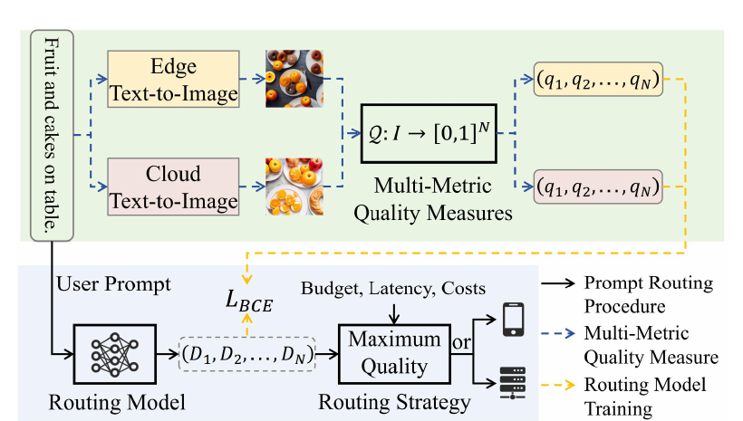

I am a PhD student in Computer Science and Technology at Shanghai Jiao Tong University. I received my B.Eng. from SJTU's IEEE Pilot Class in 2023 and continued directly into the PhD program.
My research spans agent collaboration for editable image generation, efficient visual generation, cloud–edge model collaboration, and multi-task learning. I study how agents coordinate through task planning, tool use, and information sharing to perform image editing; how to balance model quality against inference cost; and how to learn collaboratively under heterogeneous data and task settings.
研究兴趣Research interests
面向可编辑图像生成的智能体协作Agent collaboration for editable image generation
高效扩散模型与检索增强生成Efficient diffusion models and retrieval-augmented generation
端侧轻量模型与云端大模型协同Collaboration between lightweight edge models and large cloud models
联邦多任务学习与负迁移抑制Federated multi-task learning and negative-transfer mitigation
细粒度识别与密集视觉预测Fine-grained recognition and dense visual prediction
Builds pixel-wise heterogeneous noise from a retrieved image and denoises pixels asynchronously, reducing SD 1.4 from 50 to 15 steps on LAION while improving generation quality.

ICCV 2025 · CCF A
Adaptive Routing of Text-to-Image Generation Requests Between Large Cloud Model and Light-Weight Edge Model
Zewei Xin, Qinya Li✉, Chaoyue Niu✉, Fan Wu, Guihai Chen
根据提示词预测端侧与云端模型的多维质量差异，在给定成本约束下只把更困难的生成请求路由到云端。
Predicts multi-dimensional quality differences between edge and cloud models from the prompt, routing only difficult generation requests to the cloud under a cost constraint.
Scale-Shift Attention in Polarization Domain for Fine-Grained Classification of Satellite ISAR Images
Zewei Xin, Qinya Li, Bowen Sheng, Fan Wu, Guihai Chen
融合多极化雷达图像的互补特征，并用尺度移位注意力建模卫星整体结构与细小部件之间的显著尺度差异。
Fuses complementary features from multi-polarization radar images and models the large scale gap between whole satellites and fine-grained components with scale-shift attention.
Federated Multi-Task Learning with Cross-Device Heterogeneous Task Subsets
Zewei Xin, Qinya Li, Chaoyue Niu, Fan Wu, Guihai Chen
面向客户端任务子集不同的联邦场景，通过部分多任务模型、结构对齐与任务衰减因子实现跨设备协同训练。
Addresses federated clients with different task subsets through partial multi-task models, structural alignment, and task attenuation for cross-device collaboration.
Uses target-guided asymmetric cross-task interaction to mitigate negative transfer and a progressive upward Transformer decoder to restore high-resolution detail.